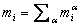
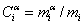

在 CONTAM 中，空气被视为理想气体，其属性根据理想气体定律计算得出。空气的密度由下式给出
| r = m/V = P/(RT) | (1) |
哪里
m = 空气质量
V = 给定体积，
P = 绝对压力，
R = 空气的气体常数，以及
T = 绝对温度。
c.v. 中的空气质量 i 是单个污染物的质量总和， a ，在简历中
|
 |
(2) |
污染物浓度 a 在简历中 i 定义为
|
 |
(3) |
在 CONTAM 中 浓度 除非另有说明，“质量比”指的是质量比而不是体积比。
空气是几种不同物质的混合物。 c.v. 中空气的气体常数值。由下式给出：
|
|
(4) |
哪里 Ri = 物质的气体常数 a 等于通用气体常数 8 314.41 J/(kmol·K) 除以摩尔质量 a （千克/千摩尔）。同样，对于热计算（CONTAM 中的一个选项，用于在 短时间步长 仅方法），管道段中空气的比热由各个物种的比热的加权和给出：

|
(5) |
在典型条件下，只有水蒸气对空气的特性有影响，甚至可以将其作为初始近似值忽略不计。物种浓度有一个标准定义 干燥空气 其有效摩尔质量为28.9645 kg/kmol，气体常数为287.055 J/(kg·K)。 ASHRAE 通常指的是干燥空气 标准条件 分别为 101.325 kPa 和 20 ℃，并注明此类空气的密度为 1.20 kg/m 3 [ASHRAE 2004 年第 18.4 页]。更准确地说，密度为 1.20410 kg/m3 3 由方程（1）计算。
NOTE: ASHRAE 将水蒸气视为 湿度比 而不是质量浓度。湿度比， W ，定义为体积中水蒸气的质量与干燥空气的质量之比：W = mw / mda [ 2005年美国采暖及制冷工程师协会 第 6.8 页]。 CONTAM 质量浓度，ASHRAE 称为 比湿度 ，是： Cw = mw / (mw + mda ）。湿度比与质量浓度之间的换算为 Cw = W / (1+W ）和W = Cw / (1–Cw).
在许多情况下，我们感兴趣的是物种浓度太小而无法显着影响空气密度（或比热）。这些被称为 痕迹 浓度 。当模拟仅涉及痕量污染物时，CONTAM 使用干燥空气来计算空气属性。